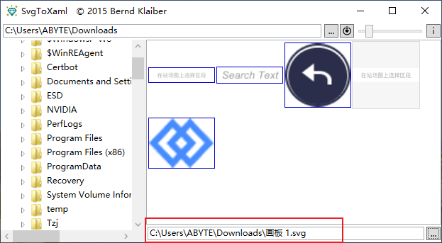
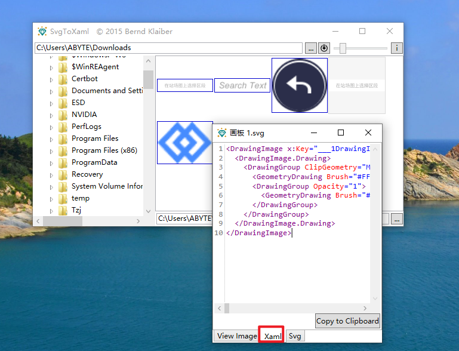

WPF
使用 SVG
-
通过 SvgToXaml 工具 将 SVG 图片转为 xaml 资源
-
打开工具，在底部选择 SVG 图片

-
在弹出的窗口中，切换到 XAML 查看代码

-
集成到资源字典，接下来我们可以把转换得到了xaml 集成到资源字典中，以下是直接放在
App.xaml中（可创建一个资源文件来存放）：
<Application x:Class="WpfApp3.App"
xmlns="http://schemas.microsoft.com/winfx/2006/xaml/presentation"
xmlns:x="http://schemas.microsoft.com/winfx/2006/xaml"
xmlns:local="clr-namespace:WpfApp3"
StartupUri="MainWindow.xaml">
<Application.Resources>
<DrawingImage x:Key="XX">
<DrawingImage.Drawing>
<DrawingGroup ClipGeometry="M0,0 V25 H120 V0 H0 Z">
<GeometryDrawing Brush="#FFFFFFFF" Geometry="F1 M120,25z M0,0z M0,25L120,25 120,0 0,0 0,25z" />
<DrawingGroup Opacity="1">
<GeometryDrawing Brush="#FFB0B0B0" Geometry="F1 M120,25z M0,0z M18.91,8.2C18.77,8.71,18.59,9.24,18.38,9.75L15.63,9.75 15.63,10.47 18.05,10.47C17.41,11.75 16.53,12.94 15.38,13.74 15.5,13.91 15.69,14.23 15.77,14.43 16.19,14.13 16.58,13.79 16.93,13.42L16.93,17.36 17.68,17.36 17.68,12.53C18.15,11.89,18.56,11.19,18.9,10.47L24.39,10.47 24.39,9.75 19.21,9.75C19.39,9.3,19.55,8.84,19.69,8.39L18.91,8.2z M20.98,10.99L20.98,12.92 18.73,12.92 18.73,13.62 20.98,13.62 20.98,16.46 18.33,16.46 18.33,17.16 24.38,17.16 24.38,16.46 21.73,16.46 21.73,13.62 24,13.62 24,12.92 21.73,12.92 21.73,10.99 20.98,10.99z M25.58,10.08L25.58,10.78 29.47,10.78 29.47,10.08 25.58,10.08z M25.98,11.35C26.21,12.48,26.42,13.95,26.46,14.93L27.09,14.82C27.03,13.83,26.82,12.38,26.58,11.24L25.98,11.35z M26.75,8.45C27.02,8.92,27.31,9.57,27.43,9.98L28.11,9.74C27.99,9.33,27.69,8.72,27.4,8.25L26.75,8.45z M28.3,11.11C28.17,12.34 27.9,14.1 27.64,15.16 26.82,15.36 26.05,15.53 25.47,15.65L25.65,16.4C26.69,16.14,28.1,15.78,29.43,15.44L29.36,14.75 28.28,15.01C28.53,13.96,28.81,12.43,29,11.25L28.3,11.11z M29.67,12.98L29.67,17.39 30.4,17.39 30.4,16.91 33.42,16.91 33.42,17.35 34.18,17.35 34.18,12.98 32.06,12.98 32.06,10.99 34.6,10.99 34.6,10.27 32.06,10.27 32.06,8.19 31.29,8.19 31.29,12.98 29.67,12.98z M30.4,16.21L30.4,13.69 33.42,13.69 33.42,16.21 30.4,16.21z M39.11,12.26C39.2,12.18,39.52,12.14,39.98,12.14L40.69,12.14C40.27,13.24,39.55,14.15,38.63,14.75L38.51,14.17 37.44,14.57 37.44,11.35 38.54,11.35 38.54,10.64 37.44,10.64 37.44,8.32 36.73,8.32 36.73,10.64 35.5,10.64 35.5,11.35 36.73,11.35 36.73,14.83C36.21,15.02,35.74,15.19,35.36,15.31L35.61,16.07C36.47,15.73,37.6,15.28,38.65,14.86L38.63,14.77C38.79,14.87 39.06,15.07 39.17,15.19 40.13,14.49 40.95,13.44 41.4,12.14L42.24,12.14C41.61,14.28 40.49,15.94 38.79,16.96 38.96,17.06 39.25,17.27 39.37,17.39 41.06,16.26 42.25,14.49 42.94,12.14L43.62,12.14C43.44,15.08 43.23,16.22 42.97,16.5 42.87,16.62 42.78,16.65 42.62,16.64 42.44,16.64 42.06,16.64 41.65,16.6 41.77,16.8 41.85,17.1 41.86,17.31 42.28,17.33 42.69,17.34 42.93,17.31 43.22,17.28 43.42,17.2 43.61,16.96 43.96,16.55 44.17,15.31 44.38,11.8 44.39,11.69 44.4,11.43 44.4,11.43L40.38,11.43C41.37,10.8,42.42,9.98,43.49,9.03L42.93,8.61 42.77,8.67 38.75,8.67 38.75,9.38 41.97,9.38C41.1,10.17 40.13,10.85 39.8,11.06 39.41,11.31 39.04,11.52 38.79,11.55 38.89,11.74 39.05,12.09 39.11,12.26z M48.75,13.81C49.55,13.98,50.57,14.33,51.13,14.61L51.44,14.1C50.88,13.84,49.87,13.51,49.07,13.35L48.75,13.81z M47.75,15.08C49.13,15.25,50.86,15.65,51.82,15.99L52.15,15.43C51.18,15.11,49.45,14.72,48.1,14.57L47.75,15.08z M45.84,8.64L45.84,17.4 46.56,17.4 46.56,16.98 53.42,16.98 53.42,17.4 54.17,17.4 54.17,8.64 45.84,8.64z M46.56,16.31L46.56,9.32 53.42,9.32 53.42,16.31 46.56,16.31z M49.14,9.52C48.64,10.34 47.78,11.12 46.92,11.63 47.08,11.73 47.34,11.96 47.45,12.08 47.75,11.88 48.06,11.64 48.37,11.37 48.67,11.69 49.04,11.99 49.44,12.26 48.59,12.66 47.63,12.96 46.74,13.14 46.87,13.28 47.03,13.57 47.1,13.75 48.08,13.52 49.13,13.15 50.08,12.64 50.91,13.09 51.86,13.43 52.81,13.64 52.9,13.46 53.09,13.2 53.23,13.07 52.35,12.91 51.47,12.64 50.69,12.28 51.44,11.79 52.07,11.22 52.49,10.54L52.06,10.29 51.95,10.32 49.36,10.32C49.51,10.13,49.65,9.94,49.77,9.74L49.14,9.52z M48.78,10.97L48.85,10.9 51.44,10.9C51.08,11.29 50.6,11.64 50.06,11.95 49.55,11.66 49.11,11.33 48.78,10.97z M59.27,8.35L59.27,16.17 55.51,16.17 55.51,16.92 64.5,16.92 64.5,16.17 60.06,16.17 60.06,12.19 63.81,12.19 63.81,11.44 60.06,11.44 60.06,8.35 59.27,8.35z M65.61,8.95C66.19,9.44,66.87,10.14,67.16,10.63L67.78,10.16C67.46,9.68,66.77,9,66.18,8.54L65.61,8.95z M69.46,8.5C69.22,9.39 68.8,10.27 68.26,10.86 68.44,10.95 68.76,11.15 68.9,11.26 69.13,10.98 69.35,10.63 69.55,10.24L71.03,10.24 71.03,11.7 68.2,11.7 68.2,12.37 70.01,12.37C69.84,13.68 69.43,14.63 67.93,15.16 68.09,15.3 68.31,15.58 68.39,15.77 70.07,15.11 70.57,13.96 70.76,12.37L71.79,12.37 71.79,14.69C71.79,15.45 71.96,15.67 72.71,15.67 72.86,15.67 73.54,15.67 73.69,15.67 74.32,15.67 74.52,15.35 74.59,14.08 74.38,14.03 74.07,13.92 73.93,13.78 73.9,14.83 73.86,14.97 73.61,14.97 73.47,14.97 72.92,14.97 72.82,14.97 72.56,14.97 72.53,14.94 72.53,14.69L72.53,12.37 74.51,12.37 74.51,11.7 71.78,11.7 71.78,10.24 74.09,10.24 74.09,9.59 71.78,9.59 71.78,8.24 71.03,8.24 71.03,9.59 69.85,9.59C69.98,9.29,70.09,8.97,70.18,8.65L69.46,8.5z M67.51,12.04L65.56,12.04 65.56,12.74 66.79,12.74 66.79,15.77C66.36,15.97,65.9,16.33,65.45,16.75L65.95,17.4C66.52,16.78 67.06,16.26 67.43,16.26 67.65,16.26 67.96,16.55 68.35,16.79 69.01,17.18 69.84,17.28 71,17.28 71.98,17.28 73.67,17.23 74.45,17.18 74.46,16.96 74.58,16.59 74.66,16.4 73.67,16.5 72.15,16.57 71.01,16.57 69.95,16.57 69.11,16.51 68.49,16.14 68.01,15.86 67.78,15.62 67.51,15.6L67.51,12.04z M76.77,8.21L76.77,10.21 75.46,10.21 75.46,10.91 76.77,10.91 76.77,13.04C76.24,13.2,75.75,13.34,75.36,13.45L75.55,14.18 76.77,13.79 76.77,16.48C76.77,16.61 76.72,16.65 76.6,16.66 76.48,16.66 76.09,16.67 75.66,16.65 75.76,16.86 75.85,17.17 75.88,17.36 76.52,17.36 76.91,17.35 77.16,17.22 77.41,17.1 77.5,16.89 77.5,16.48L77.5,13.55 78.66,13.17 78.56,12.48 77.5,12.81 77.5,10.91 78.69,10.91 78.69,10.21 77.5,10.21 77.5,8.21 76.77,8.21z M83.04,9.41C82.68,9.93 82.19,10.39 81.62,10.79 81.1,10.39 80.66,9.93 80.32,9.41L83.04,9.41z M78.96,8.73L78.96,9.41 79.6,9.41C79.97,10.08 80.46,10.66 81.04,11.16 80.26,11.63 79.38,11.98 78.53,12.19 78.67,12.34 78.85,12.62 78.93,12.8 79.84,12.53 80.77,12.13 81.6,11.6 82.38,12.14 83.29,12.55 84.28,12.81 84.38,12.61 84.59,12.33 84.74,12.18 83.8,11.98 82.94,11.64 82.2,11.18 82.99,10.58 83.66,9.83 84.09,8.95L83.64,8.7 83.51,8.73 78.96,8.73z M81.2,12.48L81.2,13.36 79.17,13.36 79.17,14.04 81.2,14.04 81.2,15.07 78.66,15.07 78.66,15.75 81.2,15.75 81.2,17.42 81.95,17.42 81.95,15.75 84.57,15.75 84.57,15.07 81.95,15.07 81.95,14.04 83.85,14.04 83.85,13.36 81.95,13.36 81.95,12.48 81.2,12.48z M94.27,8.74L85.97,8.74 85.97,17.1 94.52,17.1 94.52,16.38 86.71,16.38 86.71,9.47 94.27,9.47 94.27,8.74z M87.59,10.75C88.37,11.39 89.24,12.15 90.05,12.91 89.2,13.77 88.24,14.53 87.26,15.11 87.44,15.24 87.73,15.53 87.86,15.68 88.8,15.06 89.72,14.29 90.58,13.41 91.45,14.24 92.22,15.05 92.72,15.68L93.33,15.13C92.79,14.5 91.98,13.69 91.09,12.86 91.81,12.05 92.47,11.16 93.02,10.23L92.31,9.95C91.83,10.8 91.23,11.62 90.55,12.38 89.74,11.64 88.89,10.92 88.13,10.31L87.59,10.75z M100.38,8.57L100.38,9.78C100.38,10.51 100.22,11.4 99.23,12.06 99.38,12.15 99.66,12.4 99.76,12.54 100.85,11.81 101.08,10.69 101.08,9.8L101.08,9.22 102.48,9.22 102.48,11.1C102.48,11.78 102.61,12.04 103.28,12.04 103.4,12.04 103.89,12.04 104.03,12.04 104.22,12.04 104.43,12.03 104.54,11.99 104.52,11.84 104.5,11.59 104.49,11.41 104.37,11.44 104.15,11.45 104.02,11.45 103.9,11.45 103.46,11.45 103.34,11.45 103.2,11.45 103.17,11.38 103.17,11.11L103.17,8.57 100.38,8.57z M99.67,12.74L99.67,13.39 100.4,13.39 100.01,13.5C100.33,14.34 100.77,15.08 101.34,15.69 100.65,16.22 99.83,16.58 98.93,16.8 99.08,16.95 99.25,17.24 99.33,17.44 100.28,17.17 101.14,16.77 101.87,16.19 102.5,16.72 103.26,17.12 104.13,17.37 104.24,17.18 104.44,16.88 104.61,16.73 103.76,16.53 103.02,16.17 102.39,15.7 103.07,15 103.58,14.08 103.87,12.88L103.4,12.71 103.27,12.74 99.67,12.74z M100.63,13.39L102.97,13.39C102.72,14.12 102.34,14.73 101.85,15.23 101.32,14.71 100.91,14.09 100.63,13.39z M96.18,9.09L96.18,14.92 95.33,15.03 95.46,15.75 96.18,15.63 96.18,17.26 96.91,17.26 96.91,15.51 99.35,15.1 99.31,14.45 96.91,14.81 96.91,13.36 99.15,13.36 99.15,12.68 96.91,12.68 96.91,11.31 99.16,11.31 99.16,10.64 96.91,10.64 96.91,9.55C97.78,9.32,98.73,9.03,99.45,8.7L98.83,8.14C98.21,8.47,97.14,8.85,96.2,9.1L96.18,9.09z" />
</DrawingGroup>
</DrawingGroup>
</DrawingImage.Drawing>
</DrawingImage>
</Application.Resources>
</Application>
- 前端使用，实现 TextBox 的水印功能（最好定义一个 image 的资源）
<Window x:Class="WpfApp3.MainWindow"
xmlns="http://schemas.microsoft.com/winfx/2006/xaml/presentation"
xmlns:x="http://schemas.microsoft.com/winfx/2006/xaml"
xmlns:d="http://schemas.microsoft.com/expression/blend/2008"
xmlns:mc="http://schemas.openxmlformats.org/markup-compatibility/2006"
xmlns:local="clr-namespace:WpfApp3"
mc:Ignorable="d"
Title="MainWindow" Height="450" Width="800">
<Window.Resources>
<ImageBrush x:Key="watermark" ImageSource="{StaticResource XX}" AlignmentX="Center" Stretch="None" />
</Window.Resources>
<StackPanel>
<TextBox Name="myTextBox" TextChanged="OnTextBoxTextChanged" Width="200" Height="25" Background="{StaticResource watermark}" />
</StackPanel>
</Window>
后端添加文本changed处理事件
private void OnTextBoxTextChanged(object sender, TextChangedEventArgs e)
{
if (sender is TextBox box)
{
if (string.IsNullOrEmpty(box.Text))
box.Background = (ImageBrush)FindResource("watermark");
else
box.Background = null;
}
}
剪切板错误
❌ WPF剪切板问题-OpenClipboard HRESULT:0x800401D0 (CLIPBRD_E_CANT_OPEN))
错误示例：

原实现：
Clipboard.SetText(content);
解决方法：
Clipboard.SetDataObject(content);
参考（其中的处理方式不优）
WPF剪切板问题-OpenClipboard HRESULT:0x800401D0 (CLIPBRD_E_CANT_OPEN))
元素焦点问题
Focus() 函数常常设置失败
通过以下方式可设置成功 pwdBoxPWD 需要设置的UI元素
Dispatcher.BeginInvoke(System.Windows.Threading.DispatcherPriority.Render,
new Action(() => pwdBoxPWD.Focus()));
WPF hardware acceleration in RDP
在 .net 8.0 后出现的问题
调试模式正常运行，发布后无法运行，提示设置硬件加速
解决方案：
在项目中配置此设置RuntimeHostConfigurationOption：
<Project Sdk="Microsoft.NET.Sdk">
<ItemGroup>
<RuntimeHostConfigurationOption Include="Switch.System.Windows.Media.EnableHardwareAccelerationInRdp" Value="true" />
</ItemGroup>
</Project>
删除所有的文件，再生成
项目示例：
在某项目中，有一组菜单按钮，一个菜单对应一个页面，假设A按钮对应A页面，B按钮对应B页面，同时有个需求，在A页面，按下空格键后代码控制跳转到B页面。
出现问题：当点击A按钮后，然后按下空格键，不会跳到B页面。
调试结果：按下空格键后执行代码跳转到B页面后，会再次跳转到A页面。
分析原因：
- 点击A按钮，此时A按钮获得键盘焦点。
- 按下空格键，执行跳转到B的代码逻辑，跳转到B页面。
- 执行完成后，由于A按钮具有焦点会响应键盘，所以会执行A按钮的点击事件，既点击了A按钮，跳转到A页面。